I WHAT THIS GAME IS
1.1 Summary
Fulfillment is a wave-survival roguelite. You control one ship viewed from above. Weapons fire on their own timers and choose their own targets by default, but you can direct them: you can pull all weapons onto a point you aim at, and you can set a targeting rule per weapon.
Enemies spawn continuously and in scheduled groups. Killing them drops experience. Collecting experience raises your level. Each level lets you choose one upgrade from 4 offered. A run ends when your ship is destroyed, and progress toward permanent upgrades is kept.
1.2 What you control
Three things, in decreasing frequency of use.
Movement. Position determines which enemies your weapons can reach, which enemies can reach you, and which drops you collect. This is the primary input.
Aim, on demand. Holding the aim input pulls every weapon onto the point you indicate, overriding their normal target selection for as long as you hold it. Releasing returns them to automatic selection.
Targeting rules, per weapon. Most weapons have one of 4 rules deciding what they shoot when you are not aiming. You set these individually and they persist until changed. Wing, field and orbital weapons are the exception: they select their own targets and have no settable rule.
There is no manual trigger. Weapons fire on their own timers; you decide what they point at.
1.3 How to read this manual
Chapters one to three describe the ship, the run, and the enemies. Chapter four lists every source of upgrades and what each one gives. Chapter five describes objects on the map. Chapter six describes progress that persists between runs. The appendices list the full contents of every category.
Every number in this document is exported from the game build. None are typed by hand.
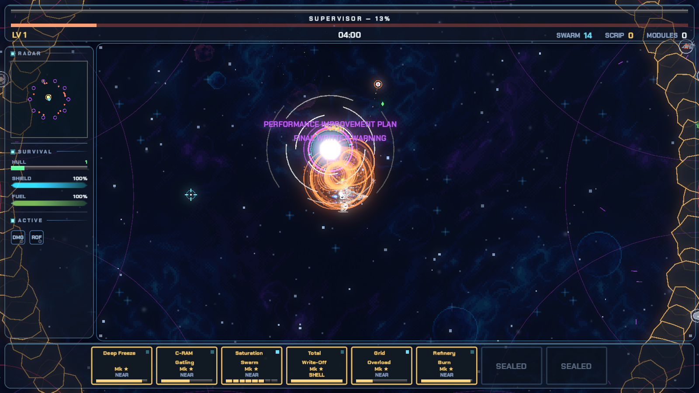
II TERMS
2.1 Glossary
These terms appear in the game interface without definition. They are defined here once and used consistently for the rest of the manual.
- run
- One attempt, from launch to ship destruction. Also called a shift in the game's own text.
- hull
- The ship type you select before a run starts. There are 3 of them.
- pip
- One unit of hull integrity. Contact with an enemy removes one pip. At zero pips the run ends.
- shield
- A separate absorbing layer that regenerates. It refills only after 3 seconds without being hit.
- rack
- The set of weapon slots on your ship, and the interface panel showing them. Weapons fire from the rack on their own timers.
- focus fire
- Holding the aim input to pull every weapon onto one point, overriding automatic target selection while held.
- targeting rule
- A per-weapon setting deciding which enemy it selects automatically. There are 4: nearest, farthest, priority, and armoured-first. Wing, field and orbital weapons have no settable rule.
- reroll
- A banked charge that redraws the current draft. Spending one replaces all 4 options.
- bay
- One slot in the rack. One weapon occupies one bay. Hull type sets how many bays you have.
- draft
- The choice of 4 upgrades offered when you gain a level. You select one; the rest are discarded.
- gem
- The experience item dropped by a killed enemy. Collect it by moving close to it. The base collection radius is 100 units and several upgrades increase it.
- level
- Your experience rank within the current run. Gaining one triggers a draft. Resets every run.
- Mk
- A weapon's rank. Ranking up increases damage and rate of fire. Caps vary by weapon, from Mk 3 to Mk 9. Each weapon's ranks are listed in the appendix.
- fork
- A permanent branch chosen when a weapon reaches its final rank. It changes the weapon's behaviour, not only its numbers.
- fusion
- A combination of two racked weapons into one new weapon. Also called a merger in the game's text.
- system
- An upgrade that changes ship behaviour rather than adding a weapon.
- passive
- An upgrade that modifies a statistic. Passives stack.
- synergy
- An extra upgrade that becomes available in drafts only after you own a specific pair of other upgrades.
- element
- One of five damage types. Four form a cycle; the fifth is neutral.
- champion
- A stronger enemy variant carrying an element. Its death produces an area effect.
- boss
- A scheduled large enemy. There are 5, and they arrive in a fixed order.
- scrip
- The currency kept between runs. Spent in the Depot.
- Depot
- The between-run shop where scrip buys permanent upgrades. It has 23 entries.
- directive
- A permanent rule change, unlocked by meeting a condition rather than bought.
- modifier
- An optional difficulty increase selected before a run, which increases scrip earned.
- objective
- A marked circle on the map. Holding position inside it awards a draft.
- landmark
- A point of interest that appears at distance. Reaching it gives a reward.
III THE SHIP
3.1 Controls
| Input | Effect |
|---|---|
| WASD / arrow keys / left stick | Move |
| SPACE (hold) / trigger | Boost. Multiplies speed by 1.85 while fuel remains |
| Left mouse (hold) | Focus fire. Pulls every weapon onto the cursor while held |
| Right stick | Focus fire on a gamepad. Aims 420 units along the stick direction |
| Click a bay in the rack | Cycle that weapon's targeting rule |
| Mouse wheel / shoulder buttons | Zoom the view |
| ESC / start | Pause |
There is no manual trigger. Weapons fire on their own timers; the inputs above decide where they point.
3.2 Boost
Boost consumes fuel at 1.4 units per second while held. Fuel regenerates at 0.5 units per second, but only after you release the key.
If fuel reaches zero, boost cuts out and does not restart until two conditions are both met: you have released the key, and fuel has recovered to 30 percent of capacity. Holding the key down on an empty tank therefore does nothing.
3.3 Damage and survival
Your ship has a number of pips set by hull type, and a shield value also set by hull type.
Incoming damage is applied to the shield first. When the shield is depleted, further contact removes pips. The shield begins regenerating 3 seconds after the last hit received, and that timer restarts on every hit.
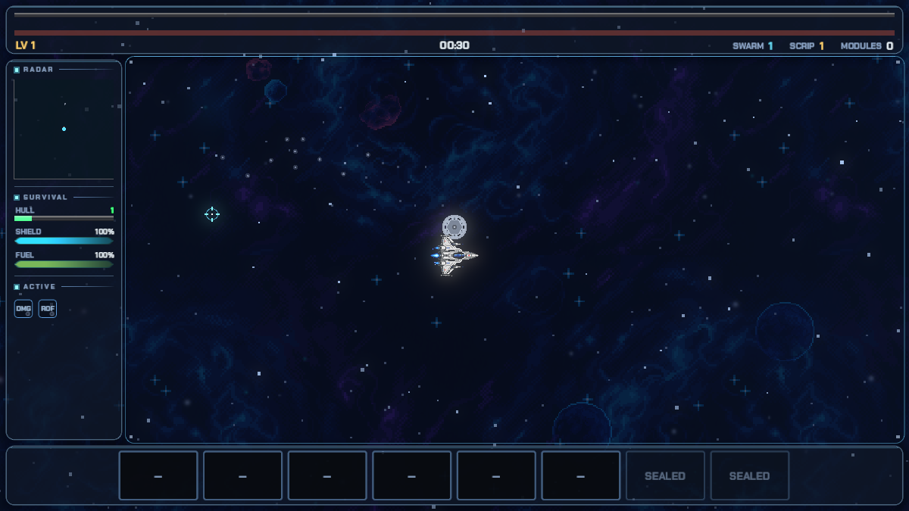
The practical consequence: repeated small contacts are more dangerous than a single large one, because they prevent the shield from ever regenerating. Continuous movement is the primary defence.
3.4 Hull types
Hulls are alternatives, not a progression. Selection happens before the run starts and cannot be changed during it. Higher bay count means more simultaneous weapons; higher pip count means more contacts survived.
HULLS
COURIER
SKIRMISHER · STANDARD ISSUE
- bays
- 6
- hull pips
- 1
- shield
- 14
- speed
- 250
HAULER
BRUISER · BULK FREIGHT
- bays
- 8
- hull pips
- 2
- shield
- 10
- speed
- 205
CARRIER
COMMANDER · REGIONAL DISTRIBUTION
- bays
- 5
- hull pips
- 2
- shield
- 18
- speed
- 205
IV THE RUN
4.1 Spawning
Enemies spawn continuously around the ship, outside the visible area. Spawn rate and enemy strength increase on a fixed schedule as run time advances. The number of simultaneously living enemies is capped at 300.
4.2 Waves
In addition to continuous spawning, groups spawn at scheduled times. A group is called a wave.
| Property | Value |
|---|---|
| First wave | 8 seconds |
| Interval between waves | 45 seconds |
| Distinct scheduled waves | 18 |
| Enemy types per wave | one or two, never three |
A wave arrives from one direction and is signalled before it lands. Continuous spawns are always kinetic, so they render grey. A wave may carry an element, in which case it renders in that element's colour. Colour therefore indicates group membership: grey is continuous traffic, colour is the wave.
When a wave carries two enemy types, the second type is a support role rather than a duplicate.
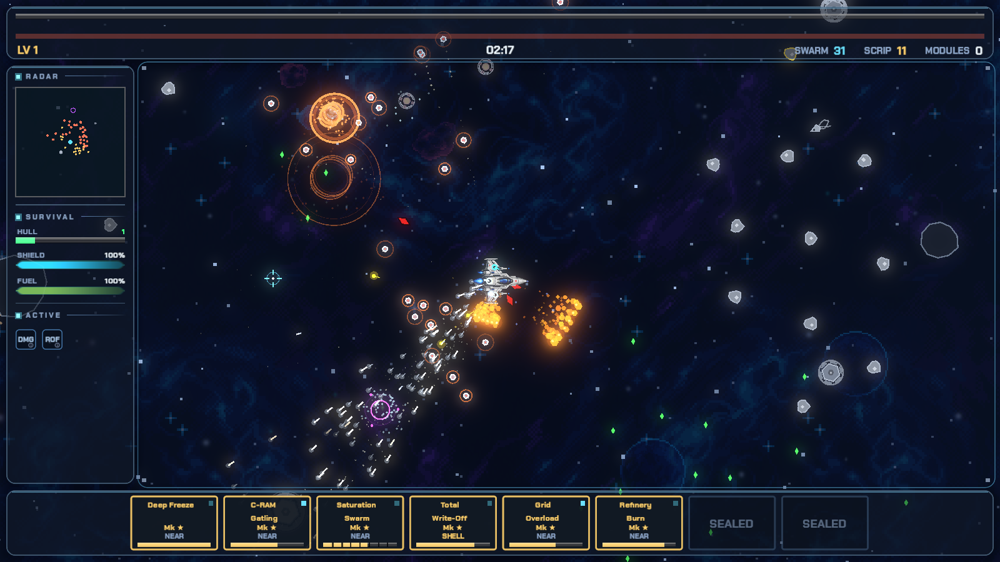
4.3 Experience and levels
Every killed enemy drops one gem. Gems have three sizes and colours, which encode the same value on two channels:
| Gem | Value range | Colour |
|---|---|---|
| Small | below 3 | green |
| Medium | 3 to 8 | gold |
| Large | above 8 | white |
Gems are drawn toward the ship once inside the collection radius, which is 100 units before upgrades and can be increased.
Experience required for the first level is 16. Each subsequent level requires 1.33 times the previous requirement. Reaching a level opens a draft immediately.
4.4 Bosses
A boss spawns at 150 seconds, and another every 130 seconds after that. There are 5 and they arrive in a fixed order. Each is a different fight rather than a larger one.
BOSSES
| # | Boss | Health | Armour | Attacks |
|---|---|---|---|---|
| 1 | SUPERVISOR | 1400 | 100 | charge · 2x sweep laser |
| 2 | REGIONAL MANAGER | 2212 | 150 | 2x ring volley · 1x sweep laser · 1 deputies |
| 3 | DIRECTOR OF THROUGHPUT | 3495 | 200 | 2x ring volley · 1x sweep laser · 1 deputies |
| 4 | VP, LOGISTICS | 5522 | 250 | 2x ring volley · 2x sweep laser · aimed fire · 1 deputies |
| 5 | THE AUDITOR | 8725 | 300 | 2x ring volley · 3x sweep laser · aimed fire · 1 deputies |
4.5 Boss phases
A boss changes behaviour twice during its fight, at fixed fractions of its health. The phase is visible in how it moves and how it telegraphs, not in a meter.
PHASES
| Phase | Name | Begins at | What changes |
|---|---|---|---|
| 1 | OPENING | full health | the published pattern, at its base cadence |
| 2 | PLAN | 66% health | breaks off and orbits; volleys tighten to x0.80 cadence and the safe lane narrows to x0.85 |
| 3 | WRITE-UP | 33% health | closes x1.45 faster; volleys SLOW to x1.45 and the telegraph runs x1.60 longer, with a x1.30 wider lane |
Phase two is the dangerous one to misread: the volleys speed up and the safe lane narrows. Phase three inverts that expectation. It closes on you faster and hits harder, but it fires less often and telegraphs for longer — the tell is deliberately more generous the closer the boss is to dying.
While a boss is past its first phase, everything on the map moves 1.2 times faster, and entering that phase files 5 additional minions.
A boss with armour has a separate phase change: breaking its shell changes its pattern immediately, independently of its health.
4.6 The arena
A boss does not fight you on the open map. It brings an arena, and the arena is a set of systems that act on their own.
ARENA
| Arena system | What it does | Numbers |
|---|---|---|
| The cage | A ring of barrier rock encloses the fight | radius 640 units |
| Cage charges | A wall stone charges, then launches at you as a comet, leaving a gap | every 7s, after a 1.0s glow, at 520 speed |
| Lightning storms | Telegraphed bolts land around you. Indiscriminate: it kills enemies too, and their loot survives | 6 bolts every 19s, 0.9s warning, 60 unit lethal radius, 45 damage to enemies |
| Sentinel wells | Static gravity wells ring the arena OUTSIDE the wall and destroy the incoming spawn flood | 10 wells, 160 units beyond the wall; they decay the moment the boss dies |
| Target gating | While the wall stands your weapons ignore enemies beyond it, rather than wasting fire on the stones | bosses are exempt and pass through the wall |
Two of these are usable rather than merely survivable. A cage charge leaves a permanent gap in the wall where the stone left. A lightning storm is indiscriminate: it kills the enemies standing in it and leaves their drops behind, so a storm landing on a crowd does your work for you.
Continuous spawning stops for 10 seconds after a boss dies, and the sentinel wells decay at the same moment.
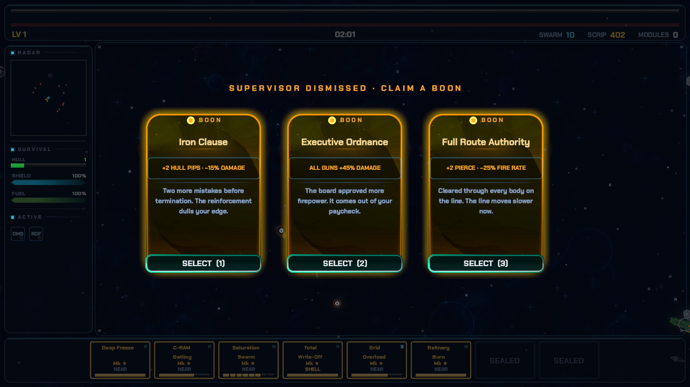
V ENEMIES
5.1 Enemy roles
Enemies are separate types with separate behaviour, not one enemy with increasing health. Each type is first introduced alone in its own wave before it appears alongside others.
Broadly, enemy behaviour falls into three groups: those that move directly toward you, those that keep distance and fire, and those that are stationary or slow but heavily armoured.
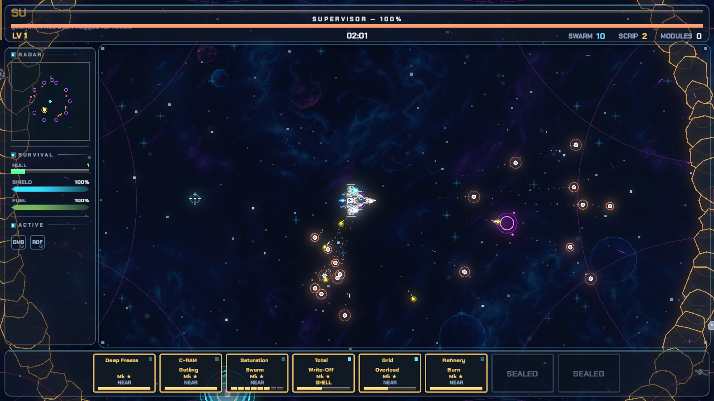
5.2 The element cycle
There are five elements. Four form a cycle in which each is strong against exactly one other and weak against exactly one other. The fifth, Kinetic, is neutral in both directions.
| Attacker | Strong against |
|---|---|
| Blaze | Frost |
| Frost | Shock |
| Shock | Void |
| Void | Blaze |
| Kinetic | nothing — neutral against all |
A strong match multiplies damage by 1.5. A weak match multiplies damage by 0.66. Any other pairing is unmodified.
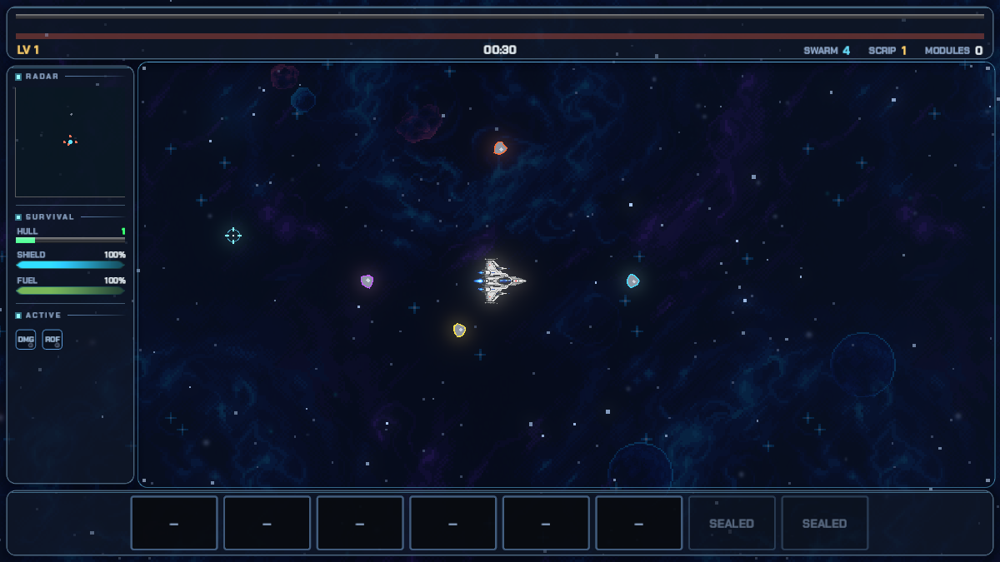
5.3 Champions
A champion is an enemy variant carrying an element. It has more health than the base type. When killed, it produces an area effect centred on its position.
Every champion death effect acts on other enemies. None of them damage or move your ship.
| Element | Effect on death | Radius | Duration |
|---|---|---|---|
| Frost | leaves a lingering slow field | 150 | 5 s |
| Blaze | ignites nearby enemies | 170 | 3.5 s |
| Shock | stuns nearby enemies | 190 | 1.1 s |
| Void | drags nearby enemies inward | 260 | instant |
The Void effect pulls nearby enemies together, which groups them for area damage. The Shock effect prevents nearby enemies from moving briefly. Position matters: where a champion dies determines whether the effect is useful.
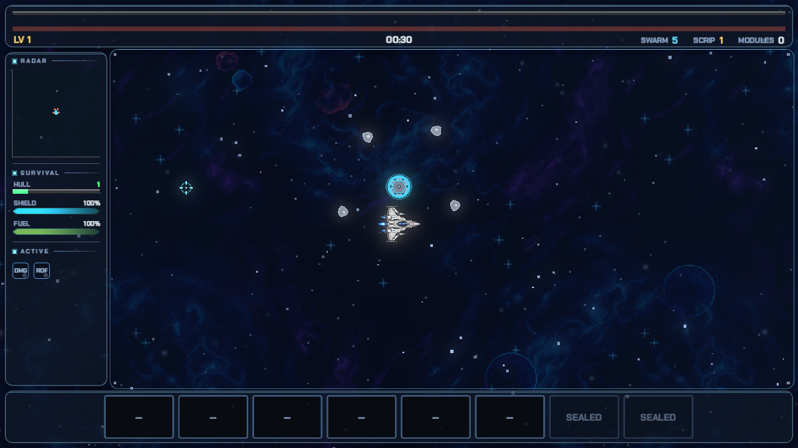
VI WHERE UPGRADES COME FROM
6.1 The six sources
Upgrades come from six distinct sources. They differ in when they are offered, what they cost, and whether they persist after the run ends.
| Source | When | Cost | Persists after the run |
|---|---|---|---|
| Draft | On every level gained | Choose one of 4 | No |
| Fork | When a weapon reaches its final rank | Choose one branch | No |
| Fusion | When two specific weapons are both racked | Consumes both | No |
| Boss boon | After killing a boss | Free, optional | No |
| Depot | Between runs | Scrip | Yes |
| Directive | Unlocked by meeting a condition | Free once unlocked | Yes |
Modifiers are a seventh category but are not upgrades: they increase difficulty in exchange for more scrip.
6.2 The draft
On gaining a level, the game pauses and offers 4 options. You take one; the rest are discarded for that draft.
If you have a reroll banked, you may spend it to redraw all 4 options instead of choosing from them.
Options may be a new weapon, a rank-up of a weapon you already carry, a passive, a system, or a synergy if its requirements are met.
Each option also rolls a rarity, which scales its strength.
| Rarity | Chance | Behaviour over time |
|---|---|---|
| Elite | 1% | Flat from the start of the run |
| Rare | up to 10% | Starts at zero and reaches the listed value after about 3 minutes |
| Uncommon | 30% | Flat |
| Common | the remainder | — |
Rare chance is time-gated: early drafts cannot produce rare cards, and the listed percentage is the fully-ramped value rather than a constant. Difficulty modifiers increase both the rare and elite chance.
An Elite weapon additionally gains a unique effect that no lower rarity provides.
6.3 Targeting rules
Each rule decides which enemy a weapon selects when you are not aiming manually. All of them only consider enemies within that weapon's range, so a weapon never idles pointing at something it cannot hit.
| Rule | Selects |
|---|---|
| NEAR | The closest enemy |
| FAR | The most distant enemy in range |
| ELITE | Marked enemies first, then bosses, then champions, then anything |
| SHELL | Armoured enemies first, then anything |
ELITE and SHELL fall back to nearest-anything when nothing matching is in range.
6.4 Weapons
A weapon occupies one bay and fires automatically. Because you do not aim, a weapon is a choice about firing pattern, range and behaviour rather than accuracy. There are 16.
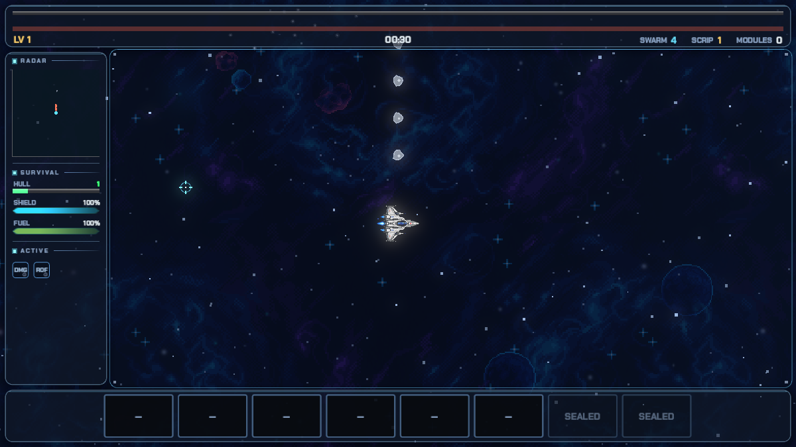
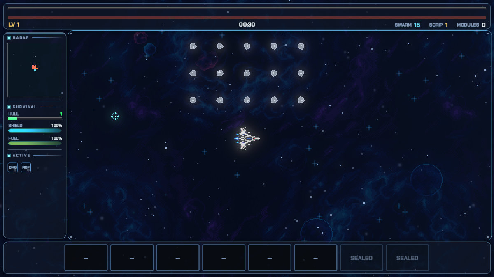
WEAPONS
| Weapon | Element | Damage Mk1 → max | Ranks | Rate/s | Mag | Range | Signature effect |
|---|---|---|---|---|---|---|---|
| Pulse Array | Kinetic | 2.52 → 3.33 | Mk 3 | 6.7 | 6 | 728 | bolts bounce to a nearby enemy |
| Flak Spread | Kinetic | 2.69 → 3.55 | Mk 3 | 1.6 | 4 | 294 | +2 pellets, and they pierce one enemy |
| Rail Lance | Kinetic | 14.56 → 19.22 | Mk 3 | 0.9 | 3 | 1080 | pierces the entire line |
| Scatter Pods | Kinetic | 4.2 → 5.54 | Mk 3 | 2.3 | 5 | 752 | each pod bursts into 3 fragments |
| Needler | Kinetic | 3.36 → 4.44 | Mk 3 | 4 | 8 | 704 | needles pierce 2 enemies |
| Flame Jet | Blaze | 2.02 → 2.66 | Mk 3 | 5 | 7 | 205 | burn spreads to nearby enemies |
| Cryo Jet | Frost | 1.23 → 1.63 | Mk 3 | 18.2 | 28 | 306 | a chilled enemy's death erupts in ice |
| Tesla Coil | Shock | 2.86 → 3.77 | Mk 3 | 5.7 | 8 | 600 | the chain reaches 3 more targets, harder |
| Void Bolt | Void | 23.52 → 31.05 | Mk 3 | 0.7 | 3 | 900 | a stronger singularity that pulls harder |
| Hangar Bay | Kinetic | 3.36 → 5.51 | Mk 5 | 2 | 1 | 372 | the wing flies one extra fighter |
| Fighter Bay | Kinetic | 3.36 → 7.66 | Mk 9 | 2 | 1 | 372 | one more fighter is kept on call |
| Bomber Bay | Kinetic | 3.36 → 7.66 | Mk 9 | 2 | 1 | 372 | every volley carries one more bomb |
| Artillery Frigate | Kinetic | 3.36 → 7.66 | Mk 9 | 2 | 1 | 372 | the battery reaches farther downrange |
| Loss Prevention | Kinetic | 11.76 → 15.52 | Mk 3 | 2 | 1 | 0 | the field also shoves intruders back |
| Retention Policy | Kinetic | 38.08 → 50.27 | Mk 3 | 2 | 1 | 0 | one more asset joins the escort |
| Solar Lance | Blaze | 67.2 → 88.7 | Mk 3 | — | 1 | 0 | a wider beam that catches the whole line |
6.5 Forks
9 of the 16 weapons offer a fork at their final rank: a choice between 2 branches that change the weapon's behaviour rather than only its numbers. The choice is permanent for that run.
The remaining weapons do not fork. They rank up to their cap and stop.
6.6 Fusions
A fusion combines two specific racked weapons into a single new weapon. The requirement for each is listed below. There are 12.
FUSIONS
| Fusion | Requires | Effect |
|---|---|---|
| HOSTILE TAKEOVER | C-RAM Gatling + Saturation Swarm | DETONATING MINIGUN · 14/s · 52px BLASTS · KILLS FEED IT |
| THE RESTRUCTURING | Warhead + Total Write-Off | SINGULARITY NUKE · 340px BLAST · PULLS · RADIATION FALLOUT |
| BLUE LINE EXPRESS | Blue Line + Twin Gauge | BURNING RAIL · PIERCES EVERYTHING · IGNITES THE LINE |
| CERTIFIED STORM | Certified Delivery + Sewing Machine | GUIDED NEEDLE STREAM · 10/s · HOMING · PIERCE 3 |
| BREAKAGE POLICY | Deep Freeze + Twin Gauge | COLD STREAM · DEEP-CHILLED DEATHS SHATTER · CHAINS TO CHILLED |
| CLASS ACTION | Wall of Invoices + Certified Delivery | 5 HOMING VOID TORPEDOES · DETONATE · LINGERING GRAVITY WELLS |
| TOTAL RETENTION | Loss Prevention + Retention Policy | LIGHTNING PERIMETER · CHAINS EVERYTHING INSIDE · 6 ASSETS |
| THE BLIZZARD OFFICE | Blast Freezer + Wall of Invoices | TRIPLE FROST MORTARS · WIDE CONE · ZONES EVERYWHERE |
| THE ARC LEDGER | Lance Array + Capacitor Bank | RICOCHET STORM · 4 BOUNCES · EACH +35% · CHAINS EVERY HIT |
| THE CONSOLIDATION | Slug Consolidator + Transcontinental | SIEGE SLUG · PIERCES THE LINE · 150px IMPACT · SHOVES EVERYTHING |
| ARC FLASH | Refinery Burn + Grid Overload | BURNING CONE · SPREADING IGNITION · 55px BURSTS · PROC ×3 |
| THE FINAL NOTICE | Transcontinental + Total Write-Off | COLLAPSING LANCE · PIERCES EVERYTHING · LEAVES A GRAVITY WELL |
6.7 Systems
A system changes ship behaviour rather than adding a weapon. Systems occupy no bay. Each has a trigger and an effect; the table lists both at base rarity and at Elite, which is the largest version.
SYSTEMS
| System | Trigger and effect | At Elite rarity |
|---|---|---|
| Vapor Recovery | TANK DRY → VENT: 42 DMG + KNOCKBACK (190px) | TANK DRY → VENT: 76 DMG + KNOCKBACK (342px) |
| Full Burn Manifest | BOOSTING → DMG ×1.60 | BOOSTING → DMG ×2.08 |
| Refuel Rebate | TANK RE-ARMS → +5 SHIELD | TANK RE-ARMS → +9 SHIELD |
| Field Rivets | +1 HULL PIP (NOW) | +2 HULL PIPS (NOW) |
| Patch Crew | BOSS KILL → +1 HULL PIP | BOSS KILL → +2 HULL PIPS |
| Jet Wash Protocol | BOOSTING → BURNING WAKE (42 DPS · IGNITES · ELITE: ALL MOVEMENT) | BOOSTING → BURNING WAKE (76 DPS · IGNITES · ELITE: ALL MOVEMENT) |
| Through-Freight Clause | ALL GUNS +1 PIERCE | ALL GUNS +3 PIERCE |
6.8 Passives
A passive multiplies one statistic. Passives stack multiplicatively, and rarity scales the size of the multiplier above the base value listed.
PASSIVES
| Passive | Stat changed | Per pick |
|---|---|---|
| Prime Speed | fire rate | ×1.15 |
| Bulk Rounds | damage | ×1.12 |
| Cargo Magnet | magnet | ×1.15 |
| Afterburner Tuning | speed | ×1.12 |
| Extended Reach | range | ×1.08 |
| Reinforced Ordnance | damage | ×1.15 |
6.9 Synergies
A synergy is an additional draft option that becomes possible only once you own a specific pair of other upgrades. It cannot be offered before its requirements are met.
SYNERGIES
| Synergy | Effect |
|---|---|
| Freight Priority | RAIL +2 PIERCE · VEL ×1.4 |
| Cold Storage | GEMS IMMUNE TO SINGULARITY PULL · WORTH +10% |
| Payroll Compression | FLAK +3 PELLETS |
| Same-Day Service | BOOSTING → ROF ×2 (ALL GUNS) |
| Compound Interest | GEMS WORTH +25% |
6.10 Boss boons
Killing a boss offers a boon. Boons are optional and are separate from the draft.
BOONS
| Boon | Effect |
|---|---|
| Executive Ordnance | ALL GUNS +45% DAMAGE |
| Mandatory Overtime | +30% FIRE RATE |
| Regional Expansion | +20% REACH |
| Expanded Roster | +1 WEAPON BAY |
| Logistics Overhaul | +50% PICKUP · GEMS +25% |
| Corporate Indemnity | +90 SHIELD · −8% MOVE SPEED |
| Hazard Bonus | +55% DAMAGE · +15% CONTACT DAMAGE |
| Full Route Authority | +2 PIERCE · −25% FIRE RATE |
| Iron Clause | +2 HULL PIPS · −15% DAMAGE |
VII THE MAP
7.1 Contents
The map has no boundary. Objects on it exist independently of you and are not aimed at you. They are nonetheless capable of destroying your ship.
7.2 Gravity wells
A gravity well applies a continuous pull to your ship within 540 units. It does not move and does not pursue. The pull increases as you approach the centre.
Two indicators show that the pull is affecting you: particles leave your hull in the direction of the well, and the ship visibly drifts off the heading your input requested. Both appear on the ship rather than on the well, because your attention is on the ship.
A gravity well is the most common cause of destruction for new players.
7.3 Asteroids
Asteroids block enemy fire. Enemy projectiles travel in straight lines and do not track, so an asteroid between you and a firing enemy is complete cover.
7.4 Cracked asteroids
A cracked asteroid is visually distinct and can be destroyed. Destroying one awards one of 6 effects, selected at random.
Three of the effects are instant. Three are temporary and last 12 seconds. Only one temporary effect can be active at a time; collecting a second replaces the first.
All damage sources destroy cracked asteroids, including area and passive damage. No aiming is required.
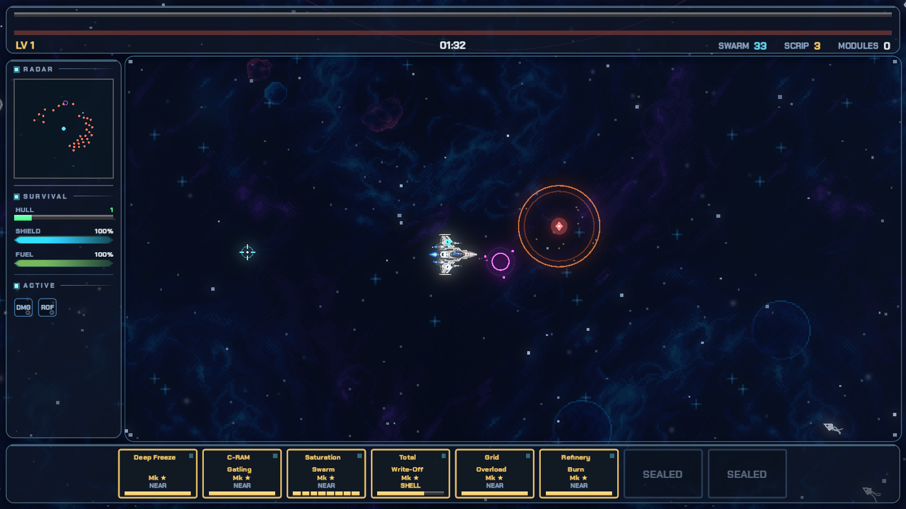
7.5 Landmarks
Landmarks are infrequent points of interest that award a reward on arrival. They always spawn outside your view: at least 1300 units away, except the first of a run, which may appear from 1200 units.
The probability of one appearing increases with distance travelled, measured as net displacement rather than total distance. Circling in one area therefore does not produce them; travelling in a direction does. Approximately 1500 units of displacement is required.
An indicator appears once when you are near one. There is no permanent directional marker.
7.6 Objectives
An objective is a large circle drawn on the map. A dashed outline means it has not been accepted.
To accept it, move inside and remain there briefly. Once accepted, enemies spawn around it and you must stay inside the circle until the timer completes. Completing it awards a draft.
Objective enemies have 1.55 times normal health and all carry the objective's element. They drop no gems, so the reward is the draft only.
Objectives can be ignored. An unaccepted objective expires on its own with no penalty.
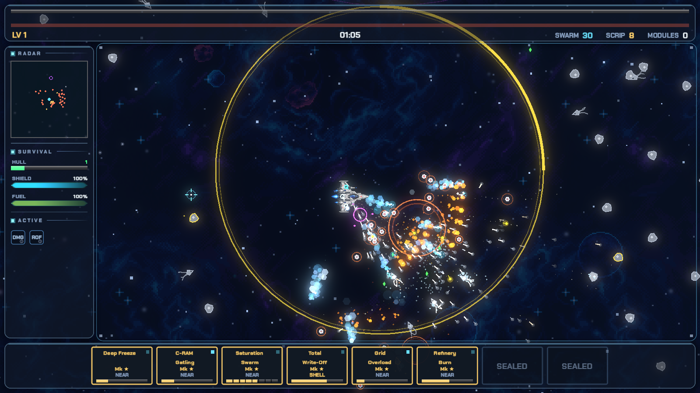
VIII BETWEEN RUNS
8.1 Scrip
Scrip is earned during a run and kept when the run ends, including when the ship is destroyed. It is the only resource that persists.
8.2 The Depot
The Depot converts scrip into permanent upgrades that apply to every future run. There are 23 entries.
Each entry has a maximum number of levels. The price is not flat: each level costs 1.28 times the previous one, so the last level of a rider costs considerably more than the first. The table lists both the first level's price and the total to buy every level.
DEPOT
| Depot item | Effect | Max levels | First level | All levels |
|---|---|---|---|---|
| Bay Lease · COURIER (skirmisher) | +1 Courier bay per level. | 4 | 450 scrip | 2707 scrip |
| Bay Lease · HAULER (bruiser) | +1 Hauler bay per level. | 5 | 450 scrip | 3915 scrip |
| Bay Lease · CARRIER (summoner) | +1 Carrier bay per level. | 2 | 450 scrip | 1026 scrip |
| Ordnance Contract | +4% weapon damage per level. | 16 | 60 scrip | 10912 scrip |
| Line Speed Agreement | +3% fire rate per level. | 16 | 60 scrip | 10912 scrip |
| Regional Coverage | +6% weapon range per level. | 12 | 50 scrip | 3275 scrip |
| Reinforced Frame | +1 hull pip per level. Non-negotiable. | 4 | 400 scrip | 2406 scrip |
| Shield Rider | +3 shield capacity per level. | 16 | 45 scrip | 8183 scrip |
| Maintenance Rider | +15% shield regen rate per level. | 12 | 45 scrip | 2948 scrip |
| Liability Waiver | -6% contact damage taken per level. | 10 | 65 scrip | 2507 scrip |
| Motor Pool Requisition | +5% move speed per level. | 12 | 50 scrip | 3275 scrip |
| Fuel Allowance | +0.2s boost fuel per level. | 12 | 35 scrip | 2292 scrip |
| Fuel Contractor | +12% fuel regen per level. | 12 | 40 scrip | 2619 scrip |
| Logistics Magnet | +15% pickup radius per level. | 12 | 35 scrip | 2292 scrip |
| Salvage Rights | +8% gem value per level. | 12 | 55 scrip | 3602 scrip |
| Onboarding Credit | Start each shift with banked XP. | 8 | 70 scrip | 1553 scrip |
| Preferred Vendor | +2% rare card odds per level. | 10 | 90 scrip | 3474 scrip |
| Payroll Adjustment | +10% scrip earned per level. | 12 | 80 scrip | 5240 scrip |
| Near-Miss Clause | +2% chance any hit simply misses, per level. | 10 | 55 scrip | 2122 scrip |
| Reroll Authorization | +1 draft reroll at the start of every shift. | 5 | 120 scrip | 1045 scrip |
| Second Wind Clause | Once per shift, a fatal hit leaves you at 1 pip. | 1 | 500 scrip | 500 scrip |
| Hazard Pay | +damage as your hull drops (up to a lot at critical). | 8 | 90 scrip | 1995 scrip |
| Signing Bonus | Start each shift with one free installed weapon. | 1 | 350 scrip | 350 scrip |
8.3 Directives
A directive is a permanent rule change rather than a numeric bonus. Directives are unlocked by meeting a condition, not by purchase. The unlock condition for each is listed.
DIRECTIVES
| Directive | Effect | Unlocked by |
|---|---|---|
| Just-In-Time Delivery | No magazines. Guns never reload — and never hurry. Fire 20% slower, forever. | Pull the trigger 15,000 times (lifetime). |
| Zero Inventory | Nothing drops. Kills bank XP directly at 85 cents on the dollar. The magnet is retired. | Reach 60 clearance levels (lifetime). |
| Hostile Workplace | The shield generator is removed. Two extra hull pips, and contact injures the other party too. | Dismiss 10 Supervisors (lifetime). |
| Perpetual Motion Clause | The boost tank never empties. Standing still voids the shield warranty — it drains. | Survive 3 hours on the floor (lifetime). |
| Single Vendor Agreement | After your first install, the draft only ever offers THAT weapon. Duplicates forever. One supplier. | Process 25,000 units (lifetime). |
8.4 Modifiers
A modifier increases difficulty in a specific way and pays for it in two currencies: more scrip at the end of the run, and a higher chance of rare cards during it. Modifiers are selected before a run begins and are optional. They stack.
MODIFIERS
| Modifier | What it changes | What it pays |
|---|---|---|
| Swift Processing | The whole floor moves faster. | +15% scrip · +2% rare |
| Peak Season | Denser waves — more bodies, sooner. | +15% scrip · +2% rare |
| Reinforced Stock | Everything takes more to put down. | +18% scrip · +3% rare |
| Management Everywhere | Champions, constantly. | +18% scrip · +3% rare |
| Compressed Schedule | Supervisors arrive sooner and faster. | +22% scrip · +4% rare |
| No Breaks | No relief window after a boss. | +12% scrip · +2% rare |
| Hazardous Floor | Contact hurts a great deal more. | +15% scrip · +3% rare |
| Armed Early | Ranged enemies kite from minute one. | +12% scrip · +2% rare |
| Austerity Measures | Leaner drops — XP is worth less. | +22% scrip · +3% rare |
| Event Horizon | Bigger, hungrier black holes. | +18% scrip · +3% rare |
IX TECHNICAL NOTES
9.1 Determinism
The game is deterministic. A given starting seed produces an identical run: the same spawns, at the same times, from the same directions, with the same drops.
All gameplay randomness comes from one seeded generator with a fixed call order. Visual effects use a separate generator and cannot influence gameplay outcomes.
9.2 About this document
This manual is generated from the game build's own data files. Weapon lists, statistics, radii, durations and counts are exported directly from the shipped configuration rather than transcribed.
The build fails if any number appears in this text without a corresponding exported source. The intended consequence is that the manual cannot describe a version of the game that does not exist.